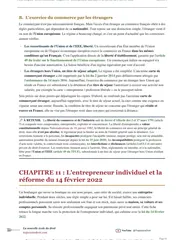

L'arrêt du 20 octobre 1920 sur la solidarité commerciale, expliqué simplement
Le 20 octobre 1920, la chambre des requêtes de la Cour de cassation juge qu'en matière commerciale, plusieurs personnes qui doivent la même dette sont présumées solidaires. Le créancier peut donc réclamer toute la somme à l'une d'elles. En droit civil, l'article 1202 du Code civil (aujourd'hui 1310) exige au contraire une clause pour cela. La Cour s'appuie sur un usage plus ancien que le Code de commerce, qui rassure le créancier et facilite le crédit des débiteurs. Elle applique toujours cette règle aujourd'hui.

L'essentiel de l'arrêt
Le 20 octobre 1920, la chambre des requêtes de la Cour de cassation juge que la solidarité entre codébiteurs se présume en matière commerciale. En droit civil, au contraire, elle doit être prévue.
Les codébiteurs sont plusieurs personnes qui doivent la même somme à un même créancier, c'est-à-dire à la personne à qui l'argent est dû. Quand ils sont solidaires, le créancier peut réclamer toute la somme à un seul d'entre eux.
À l'époque, l'article 1202 du Code civil disposait que « la solidarité ne se présume point ». Elle devait donc venir d'une clause expresse ou d'un texte. Cette règle figure aujourd'hui à l'article 1310 du Code civil, avec le même sens.
La Cour de cassation écarte pourtant cette exigence dès qu'une dette est commerciale. Elle s'appuie sur un usage antérieur au Code de commerce lui-même, c'est-à-dire sur une pratique plus ancienne que la loi écrite. Selon cet usage, le créancier peut réclamer toute la dette commerciale à chaque codébiteur, sans qu'aucune clause le prévoie.
Cet usage va ouvertement contre un texte de loi, et il s'applique pourtant encore aujourd'hui, un siècle plus tard.
Cette présomption vaut seulement pour la solidarité passive, celle qui lie plusieurs débiteurs. La solidarité active, entre plusieurs créanciers, exige toujours une clause ou un texte, même en matière commerciale. De plus, la présomption suppose plusieurs débiteurs tenus à la même dette envers le même créancier, comme la Cour de cassation l'a rappelé en 2024.

Fiche complète
Droit commercial L3
Les faits, une dette commerciale sans clause de solidarité
Dans cette affaire, plusieurs personnes se sont engagées ensemble envers un créancier, pour une dette née d'une opération commerciale.
Leur engagement ne dit pas qu'elles répondront solidairement de cette dette. Quand des débiteurs sont solidaires, le créancier peut réclamer toute la somme à un seul d'entre eux, qui se fait ensuite rembourser par les autres. En droit civil de l'époque, sans cette clause, chaque débiteur devait donc seulement sa part.
Le créancier réclame pourtant toute la dette à un seul des codébiteurs. Celui-ci refuse de payer le tout. Selon lui, faute de clause de solidarité, il doit seulement sa part virile, c'est-à-dire la part qui lui revient personnellement dans la dette commune.
La procédure et le pourvoi
Les juges du fond, c'est-à-dire le tribunal puis la cour d'appel, donnent raison au créancier. Ils retiennent la solidarité entre tous les codébiteurs et condamnent le débiteur poursuivi à payer toute la dette. Celui-ci forme alors un pourvoi devant la chambre des requêtes de la Cour de cassation.
Il invoque l'article 1202 du Code civil, selon lequel la solidarité ne se présume point. Pour ce texte, elle doit venir soit d'une clause expresse des parties, soit d'une disposition de la loi.
Son engagement ne contient aucune clause de ce type. Il estime donc devoir seulement sa propre part, et reproche aux juges du fond d'avoir retenu la solidarité sans texte ni clause.
Le problème de droit
La solidarité entre plusieurs débiteurs peut-elle être retenue, en l'absence de toute clause expresse, lorsque la dette qui les lie est de nature commerciale ? Autrement dit, la règle civile qui exige un texte ou une clause pour la solidarité s'applique-t-elle aussi aux dettes commerciales, ou le droit commercial suit-il sa propre règle ?
La solution de la chambre des requêtes
La Cour de cassation rejette le pourvoi. En matière commerciale, elle écarte l'article 1202 du Code civil, parce qu'un usage plus ancien que le Code de commerce impose la solution inverse.
Le principe posé par l'arrêt
« Selon un usage antérieur à la rédaction du Code de commerce et maintenu depuis, [...] la solidarité entre débiteurs se justifie par l'intérêt commun du créancier, qu'elle incite à contracter, et des débiteurs, dont elle augmente le crédit. »Cass. req., 20 octobre 1920, S. 1922.1.201, note Hamel
La solidarité entre les codébiteurs de la dette commerciale est donc retenue, alors qu'aucune clause ne la prévoyait. Le débiteur poursuivi doit payer toute la dette au créancier. Il pourra ensuite se faire rembourser par ses codébiteurs, chacun pour sa part.
Tu révises ton droit commercial ?
Je t'envoie gratuitement mon guide « Réviser le droit sans s'épuiser ». Tu y trouves ma méthode de révision en sept parties, celle qui permet à mes élèves de retenir les grands arrêts semaine après semaine.
Le sens du raisonnement, un usage plus fort que le silence du contrat
Pour comprendre cet arrêt, il faut d'abord savoir pourquoi le droit civil se méfie de la solidarité.
Quand plusieurs personnes doivent la même somme, chacune doit en principe seulement sa part. On parle alors d'obligation conjointe. La solidarité est plus lourde pour les débiteurs, puisque le créancier peut réclamer toute la dette à un seul d'entre eux.
Le Code civil protège donc les débiteurs contre une charge qu'ils n'auraient pas voulue. Il exige qu'une clause expresse ou un texte de loi prévoie la solidarité. C'est la règle de l'article 1202 du Code civil de l'époque, reprise aujourd'hui à l'article 1310.
La Cour de cassation écarte cette protection dès que la dette vient du commerce.
En droit, un usage est une pratique ancienne et constante, suivie par les commerçants eux-mêmes. À force d'être suivie, elle finit par obliger presque autant que la loi dans son domaine.
La Cour rappelle que cet usage est antérieur au Code de commerce de 1807. Il existait donc déjà avant que le législateur n'écrive le droit commercial, et il s'est appliqué depuis sans jamais être inscrit dans un texte.
La raison tient au crédit entre commerçants. Quand plusieurs commerçants s'engagent ensemble, le créancier accepte plus facilement de traiter avec eux, car il sait qu'il pourra réclamer toute la somme à n'importe lequel d'entre eux. Il n'aura pas à engager un procès contre chacun pour sa part.
Cette solidarité augmente le crédit des débiteurs, c'est-à-dire la confiance qu'on leur fait, puisqu'elle rassure le créancier sur ses chances d'être payé. Le créancier et les débiteurs y trouvent donc chacun leur intérêt. C'est pourquoi l'usage s'est maintenu de lui-même, sans qu'une loi ait besoin de l'imposer.
Pourquoi cette présomption gouverne-t-elle encore les dettes commerciales ?
Les arrêts récents montrent que cette présomption s'applique toujours, et même à de nouvelles situations.
La chambre commerciale de la Cour de cassation l'a ainsi réaffirmée dans un arrêt du 30 août 2023 (n° 22-10.466, publié au Bulletin, c'est-à-dire retenu par la Cour elle-même comme une décision importante), à propos d'une cession de contrôle d'une société commerciale.
Dans cette affaire, plusieurs associés vendaient ensemble les parts qui donnaient le contrôle d'une société commerciale. La Cour juge que ces vendeurs doivent exécuter solidairement leurs engagements, même s'ils ne sont pas commerçants, y compris l'obligation de rendre l'acompte versé sur le prix. Pour l'éviter, ils auraient dû écrire dans l'acte une clause qui écarte expressément la solidarité.
La Cour tire cette solidarité du seul caractère commercial de la vente, comme en 1920.
Elle a toutefois fixé une limite à cette extension, dans un arrêt du 24 janvier 2024 (n° 20-13.755). La Cour de cassation y rappelle que la présomption de solidarité commerciale suppose une vraie pluralité de codébiteurs tenus à la même dette envers le même créancier.
Dans cette affaire, un acheteur avait acquis des parts sociales, c'est-à-dire des titres qui représentent une fraction du capital d'une société. Il les avait achetées à un seul vendeur parmi plusieurs, et il n'avait signé aucun contrat avec les autres.
La Cour juge qu'il n'est solidaire d'aucun d'entre eux, puisqu'il ne partage avec eux aucune dette. La présomption de 1920 garde donc toute sa force, mais elle joue seulement entre les débiteurs d'une même dette.
Cette règle créée par les juges a même failli entrer dans la loi. Une proposition de loi déposée à l'Assemblée nationale voulait l'inscrire dans le Code de commerce, en créant de nouveaux articles L. 123-32 à L. 123-34. La proposition n'a jamais abouti, et une autre loi a depuis réutilisé ces numéros pour un sujet sans rapport, les formalités administratives des entreprises.
Son exposé des motifs, c'est-à-dire le texte qui présente les raisons de la proposition, rappelait que la règle reposait seulement sur l'arrêt du 20 octobre 1920, sans aucun texte de loi.
La réforme du droit des obligations de 2016 n'a pas davantage inscrit cet usage commercial dans le Code civil, alors qu'elle en avait l'occasion.
Un siècle après l'arrêt de 1920, la présomption de solidarité commerciale reste donc une règle créée par la jurisprudence, sans texte de loi qui l'affirme.
Ma fiche de droit commercial L3 reprend tout le programme de la matière, de l'acte de commerce et du commerçant jusqu'au fonds de commerce et au bail commercial. Tu y trouves les notions et les grands arrêts à connaître.
Cet arrêt dit seulement quand la solidarité se présume. Ce qui se passe une fois la solidarité établie relève d'autres règles. Ma page sur la solidarité entre débiteurs explique ainsi les effets de la solidarité passive et le recours entre codébiteurs, puis la différence avec le cautionnement solidaire.
La critique doctrinale
La solution divise les auteurs, parce qu'elle maintient un usage contraire à un texte de loi clair.
Dans une étude consacrée au sujet, Bruno Dondero juge cette présomption trop sévère et demande de la nuancer. Selon lui, elle impose à chaque codébiteur commercial une charge automatique, que les parties n'ont souvent ni voulue ni même envisagée au moment de signer.
D'autres commentateurs relèvent une faiblesse de fond. En 2016, la réforme du droit des obligations a réécrit l'article 1310 du Code civil avec le même sens que l'ancien article 1202, sans prévoir d'exception pour la matière commerciale.
L'usage de 1920 va donc toujours contre un texte que le législateur a laissé tel quel alors qu'il pouvait le modifier. Un doute demeure ainsi sur la solidité de la règle, si la Cour changeait un jour d'avis.
La solution reste malgré tout défendue pour son utilité pratique. Elle protège le crédit entre entreprises, car le créancier n'a pas à poursuivre séparément des débiteurs qui n'ont pas tous les mêmes moyens de payer. De plus, elle correspond à ce qu'attendent les professionnels qui s'engagent ensemble dans une opération commerciale.
Cette utilité économique explique, bien plus que le texte du Code civil, pourquoi la Cour de cassation continue d'appliquer la présomption, comme le montre encore l'arrêt du 30 août 2023.
Comment utiliser cet arrêt dans une copie
Dans un cas pratique. Tu cites cet arrêt dès qu'un énoncé décrit plusieurs personnes engagées ensemble envers un même créancier pour une dette de nature commerciale, sans clause de solidarité écrite.
Tu vérifies d'abord que l'acte ou l'opération a bien un caractère commercial. Tu vérifies ensuite que plusieurs débiteurs sont tenus à la même obligation envers le même créancier. Si ces deux conditions sont réunies, la solidarité se présume, et le créancier n'a rien d'autre à prouver.
Dans une dissertation sur les usages en droit commercial. Cet arrêt montre qu'un usage peut aller contre un texte de loi clair. Il te sert donc de point de départ pour réfléchir à la place de la coutume parmi les sources du droit.
La méthode complète se trouve sur ma page sur la fiche d'arrêt et sur celle consacrée au raisonnement juridique étape par étape.
Pour une autre règle de droit commercial construite par les juges sans texte spécial, tu peux lire ma fiche sur le parasitisme économique.
Les erreurs à éviter avec cet arrêt
- Distinguer solidarité passive et solidarité active. En matière commerciale, seule la solidarité entre débiteurs se présume. La solidarité entre créanciers exige toujours une clause ou un texte, même entre commerçants. Les étudiants mélangent souvent les deux, et c'est une erreur que le correcteur repère tout de suite.
- Vérifier que les débiteurs doivent la même dette. Le 24 janvier 2024, la Cour de cassation a jugé qu'un acheteur qui a traité avec un seul des vendeurs n'est solidaire d'aucun des autres. La présomption joue donc seulement entre les débiteurs d'une même obligation.
- Présenter la règle comme une création des juges. Aucun texte n'écrit cette présomption, qui vient de la jurisprudence. Une proposition de loi a bien tenté de l'inscrire dans le Code de commerce, mais elle n'a jamais abouti.
- Expliquer ce que l'arrêt apporte. La date seule ne te donne presque aucun point. Le correcteur attend que tu expliques pourquoi un usage peut écarter un article du Code civil, et jusqu'où va cette exception.
Questions fréquentes
Que dit l'arrêt du 20 octobre 1920 sur la solidarité commerciale ?
Cette présomption de solidarité commerciale est-elle toujours d'actualité ?
Comment citer l'arrêt du 20 octobre 1920 en copie ?
La présomption de solidarité commerciale vaut-elle aussi pour la solidarité active ?
Quelles sont les limites de la présomption de solidarité commerciale ?

Tout le programme de droit commercial tient dans une seule fiche.
Ma fiche de droit commercial L3 reprend les notions une par une, avec leurs grands arrêts. Tout y est expliqué avec des mots courants, et tu peux t'en servir tel quel en commentaire comme en dissertation.
Voir la fiche de droit commercial L3